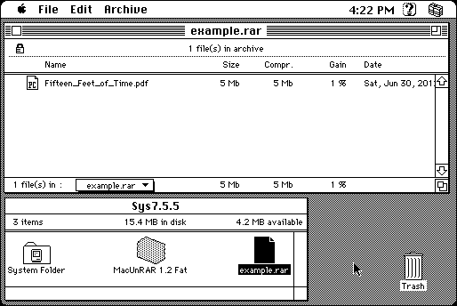

Download
MacUnRAR12.zip (172K) MacUnRAR 1.2 repackaged into a zipped hfs disk image and checksum file. The disk image can be mounted with Mini vMac.
MacUnRAR12.sit.hqx (229K) MacUnRAR 1.2 in the original format.
copyright: Guillaume Dufay, Eugene Roshal
mod date: Jul 19, 1998
license: freeware
last known url
(gone)
“For extracting, listing, and verifying the content of archives created with the PC RAR archiver, version 1.50 and above.” For System 7.0 or later. It appears to require System 7.5, at least on a Macintosh Plus. MacUnRAR is an old version of MacRAR. (MacRAR doesn't work on the Macintosh Plus).

If you find these downloads useful, please consider helping the Gryphel Project, which hosts them.
Here are the md5 checksums for the downloads, signed with Gryphel Key 5:
--------- GRY SIGNED TEXT --------- c0def4cb0ca0d87973fe15987fecf455 MacUnRAR12.zip 05b84f169e929be0153e9941977e8625 MacUnRAR12.sit.hqx ------- BEGIN GRY SIGNATURE ------- Gry/4Xa8CFcUzxdN/NVn8zp3eBhD7F5hgUnqWD33CpkTgyAJl3DvRkHSqCnwD6yZ Gfy5RVi0MPon/Y3YSLWvudpXw08W9zWU7ktC7b1M8nh1nMNSjcN9qt+MMLgNF6PU YjRhuMm+jq7P5gYoDnfG54k5pXZbtgpQkloG8gpY2M8zqtakGeHh62R4aGqBDCaN -------- END GRY SIGNATURE --------